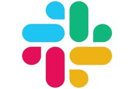

Saleskit 2.0
Problem statement
In 2017 I worked on the redesign and complete rebuild of Barfoot & Thompsons Saleskit product. The existing project was built on ASP classic technology and was increasingly seen as a security risk whilst also delivering a poor user experience to agents. The proposals often needed to be collated quickly for clients and Saleskit 1.0 often made a pressurised situation more stressful than it should have been.
The asset
- 7 different themes across 2 lines of business: Residential & Commercial sales
- Users had their own private account to create confidential proposals
- 12,000 proposals were created annually
- Digital version or hard copy proposals could be generated
- Professional printer could turn around physical copies overnight when received by 2pm
- Integrated with third parties PropertyGuru and Propertysmarts to import property specific comparative market analysis.
Desired key outcomes
The main outcome of the design was to create a product with a far better user experience than version 1.0.
- Rebuild the platform and a single theme first as an MVP. Build additional themes once the business was satisfied the platform was robust and highly functional.
- Build a secure, performant platform on modern technology.
- Enhance Saleskit with new features users would love.
The initial state
Saleskit 1.0 was in a tired state and the following are just a few reasons it was a frustrating product to use. I observed frustrations in others and had my own when using Saleskit over 2 years prior to the redesign.
- After making changes users had to press a save button when they exited each screen, this quickly became tedious.
- Pages could only be edited one at a time, users had to open a page, edit it, close the page and the open the next one.
- Table formatting was extremely difficult and had very limited flexibility
- Image cropping was difficult and skewed images if not done 'correctly'.
- Overall performance was slow and crashes occurred sporadically. This a particularly annoying if the user had written a lot of body copy and not hit the save button.
Users & audience
The users of Sales Kit were internal staff only and all of the approximately 2000 users represented multiple facets of the business including residential salespeople, commercial salespeople, residential property managers and commercial property managers.
Getting to know the users
I had a good knowledge of Sales Kit 1.0 as a user in previous role however I realised it was important to step outside of my own bubble when exploring user wants and needs.
I attended several training sessions to observe how users who were brand new to the company responded to the existing product. It was also good to build rapport with our trainer who had a first hand view of the shortcomings of Saleskit.
I also conducted one on one observations of users where I observed frustrations that users wouldn't necessarily articulate in a conversation after the fact. It was always interesting observing 🤨 or 🤔, my favourite reaction was 🤬.
In the annual marketing survey we asked users what they felt were the biggest areas for improvement with Saleskit and a resounding 60% of the feedback, if not more, singled out usability, poor performance and limited photo library as being the most problematic.
Roles & Responsibilities
I was responsible for user research, UX & UI design.
My responsibilities included but weren't limited to:
- Conceptualising using sketches & wireframes
- Documenting user flows in Sketch and Invision
All graphic design work was handled separately by graphic designers in our marketing team. I liaised with them to ensure designs were feasible to build as well as give advice on considerations, design systems etc.
The developer was a contract resource who worked solely on the project over a 6 month contract. This was enough to deliver a solid platform and MVP.
Once the MVP was completed and the other themes were completed the project was handed over to the web app team to continue the build of features and enhancements and ongoing maintenance.
Product owner
With the departure of our business analyst in July of 2018 I was made product owner of Sales Kit. On top of my UX responsibilities I became responsible for overseeing the project, including reporting back to the business regarding its progress. Further tasks included:
- Responsible for any bugs or downtime and co-ordinated the appropriate fix.
- Scheduling of deployments
- Reporting to the business around progress
- Grooming the Saleskit backlog and managing the product roadmap
With the redesign of the company branding in October 1, 2019 I facilitated all work on the build and managed the progress to ensure the product went live on October 1, the non-negotiable go live date.
Tools
In 2017 there were a range of excellent tools I used. Apps like Sketch, Zeplin and InVision being my core tools.
Alongside the developer we also chose to use the React-Bootstrap library as a design system which we customised when required. Leveraging these assets allowed for rapid design and development which was important given the timeframes for the project.
UX / UI
Prototyping
Handoff
Management
Scope & constraints
The nature and length of the proposals meant building them on mobile would be a tedious task. Given time constraints it was decided to deliver a product optimised to tablet and desktop. Small changes could still be made on mobile phones but minimal effort was spent on these devices.
Strict time and resource means some compromise
We retained the old photo library / file structure from Saleskit 1.0 and as of today it is still in use. As it was functioning well we couldn't spare the time to rebuild it.
Despite a lot of effort spent optimising PDF output there were are rare occasions where the online appearance of text is very slightly different to the PDF document. As far as we have researched this is part of the translation from HTML to PDF but it has been the source occasionally of user frustration.
At the outset of the project the developer researched a completely inline experience where users could edit the pages directly. Unfortunately the added technical complexity meant we couldn't commit to solution though it showed promise from a usability perspective.
Learnings & conclusion
It is difficult to quantify the impact that the redesign and build had as there were no analytics in Saleskit 1.0. The only metric that we could query in the old platform was how many Residential proposals were generated. In 2017 this number was 12,000 and in 2019 that number had grown to over 14,000 representing a 15% increase.
Late 2018 saw the addition of 3 new themes for our property management staff and over the course of 2019 our property managers produced over 8000 proposals. While these numbers are an impressive addition to numbers from other lines of business, to attribute that growth solely to the implementation of the new Saleskit, would be disingenuous.
Key outcomes evaluation
1. Rebuild a platform and a single theme first as an MVP
We successfully met all targets and deployed an MVP that the company was happy with. Feedback was positive from our agents as well as the trainers who ran monthly training sessions on Saleskit. By delivering one theme first we were able to fix most bugs quickly and design and build in an agile way. This created trust in the team who went on to build over 10 themes on the platform.
2. Build a secure, performant platform on modern technology
The developer, infrastructure team and web apps team built a robust solution in React which delivered a secure high performing product. While the security aspects were a little beyond my comprehension the user experience and performance greatly exceeded its predecessor. Delivering a platform to produce multi page booklets in a browser but also has to output to a printer has its complexities - Sales Kit 2.0 straddled both the digital and print environment well.
3. Enhance Saleskit 2.0 with features users would love.
Our discussions with agents showed us what a difficult job it is to enter someone else's house to convince them to sell what was often their biggest asset. Appointments could be hastily setup and it was critical an agent turn up well prepared. It was critical Sales Kit 2.0 be an intuitive tool that assisted and not hinder the pitch. We achieved this by delivering features including:
- Quicksearch to quickly locate previous proposals
- A comprehensive image library with thousands of professionally shot images of Auckland suburbs
- Scroll and edit quickly through multiple pages while editing
- Auto-save
- Visual tiles to distinguish proposals
- Import any page and content from any previous proposal
A victim of its own success
Overall the Sales Kit product was a huge success however with that same success came some interesting challenges. The initial MVP consisted of 2 themes but over a 2 year period that number had ballooned to 11. Given that there are on average 25 pages per theme this meant that there were in excess of 250 pages that had to be maintained and rebuilt when the company rebranded.
Over the years saw different developers working on Sales Kit which resulted in an inevitable decline in the standard and consistency of the overall product. And while, in hindsight it would have been beneficial to have implemented a small project to deal with technical debt and consolidate the code and functionality, it is difficult to anticipate whether the company would have recognised the long term value in allocating resources to such a project early on.
In recent developments the app has diversified into creating informational booklets for tenants in our rental properties. And while this is a departure from the 10 other themes that were specifically targeted at winning new business, this diversification is another positive sign that shows the product works well to create comprehensive documents. I do however wonder what the impact of continual growth will have on sustainability and maintainability of Sales Kit.
Notion.io and Lucidpress
Given that the timeframe to deliver this project was only 6 months, it was decided not to pursue a completely inline solution which would have effectively allowed the user the capability to edit all contents directly on the page. Although this would have been a great feature to incorporate, the decision not to pursue it at that time was the right one. Had we attempted this functionality there was very real risk of not delivering the project on time, if at all.
It is however interesting to see that over the last 12 - 18 months companies that have successfully delivered this type of functionality . While this is likely due to apps like Notion and Lucidepress which have really moved this style of authoring forward with an intuitive interface, perhaps, if the project was starting again today we would look to implement these underlying technologies and borrow from some of the UX/UI patterns established by the products mentioned above.